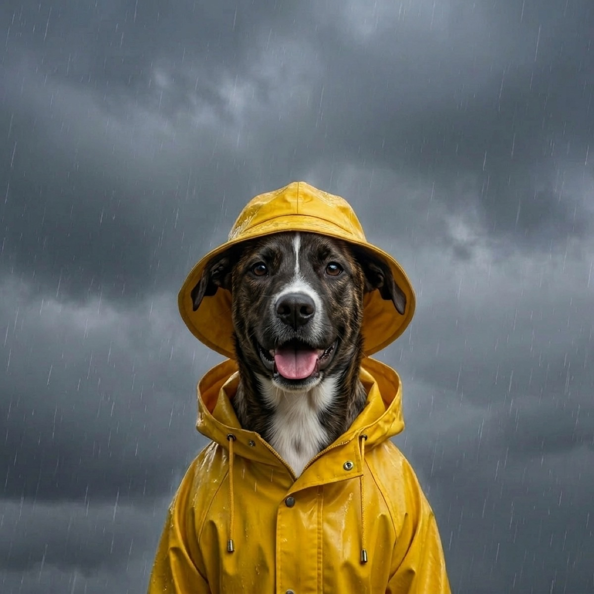

Best Dog Rain Jackets to Beat the Downpour
Some dogs march into a downpour without a second thought. Plenty of others plant their feet at the door, do their business in record time, and come back shivering, soaked to the skin, and tracking mud across your floor. A good rain jacket fixes a lot of that at once: it keeps your dog drier and warmer on a cold, wet walk, cuts down on the post-walk towel routine, and makes them easier to spot when the sky goes gray. Here are the dog rain jackets we would actually buy this season.
WeatherPets is a participant in the Amazon Services LLC Associates Program. As an Amazon Associate we earn from qualifying purchases. Our picks are chosen independently, and buying through our links costs you nothing extra.
A raincoat is not just a fashion call. The American Kennel Club notes that long stretches in cold, wet conditions can leave a dog chilled and uncomfortable, and that small dogs, sighthounds, hairless breeds, and low-slung dogs like Dachshunds tend to struggle most when their bellies drag through wet grass. A jacket is one easy way to keep those walks pleasant rather than something your dog dreads.
How we picked
We leaned on editorial roundups and long-run owner reviews, then weighed each jacket on the things that matter once the rain starts: real waterproofing (a proper coated or taped shell, not just water-resistant fabric), coverage of the back and belly where dogs get soaked fastest, a fit that does not pinch the legs or chest, reflective trim for low-light visibility, and a leash portal so a harness still works underneath. We also kept value in mind, because the best jacket is the one you will actually put on your dog every rainy day. We are not quoting prices or star ratings here, since those drift; we are describing how each one performs.
1. Ruffwear Sun Shower Dog Raincoat
The best all-around pick for most dogs.
This is the jacket reviewers keep recommending when they want serious coverage without bulk. It is a lightweight, non-insulated shell in waterproof, windproof ripstop nylon with a PU coating, an oversized storm collar that shields the neck, a vest-style cut, side-release buckles, and leg loops that keep it from riding up. A back leash portal lets you run a harness underneath, and reflective trim helps in low light. The tradeoff is that it is a shell, not a warm coat, so for a cold-and-wet day you may want a layer under it for a thin-coated dog.
2. Hurtta Monsoon Coat II ECO
Best for visibility on dark, wet walks.
If most of your rainy walks happen at dawn, at dusk, or under heavy cloud, this is the one to reach for. It uses a waterproof, breathable fabric with fully taped seams, a rain-trap collar that seals around the neck, and a wide belly flap that holds the coat in place without restricting stride. The standout is safety: large 3M reflective prints on the back and hem light up under headlights and flashlights far better than a thin reflective line. The catch is that the careful, technical build puts it at the higher end of the range, so it is an investment rather than a grab-and-go budget coat.
3. Yellow Dog Rain Coat with Reflective Stripe (XX-Large)
Best for large and giant breeds.
Big dogs need a lot of fabric to stay dry, and this classic hooded slicker scales up to XX-large to cover a broad back and long body. The bright yellow shell sheds water, the wide reflective stripe makes a big dog easy to see across a wet street, and the hood plus belly coverage keeps the rain off where it counts. The tradeoff is that it is a simple, traditional slicker rather than a technical jacket, so the fit is roomier and less tailored; check the size chart against your dog's measurements, since a coat this large lives or dies on getting the length right.
4. HDE Dog Raincoat Hooded Reflective Poncho
Best budget pick.
If you just want something that works without spending much, this hooded poncho is the easy answer. It is a lightweight, nylon waterproof coat with reflective piping, a built-in leash hole, and adjustable straps, and it comes in a wide range from small to X-large. It goes on fast and packs down small for the car or a bag. The tradeoff is that a poncho-style coat covers the back well but leaves the legs and lower belly more exposed than a full shell, so think of it as solid everyday drizzle protection rather than head-to-toe armor for a heavy storm.
5. HDE Reversible Dog Raincoat Hooded Slicker
Best for a little style without a second purchase.
This is the same budget-friendly idea as our number four pick, but with a twist: it is reversible, so you get a solid color on one side and a pattern on the other and can flip it for a fresh look. It is a hooded slicker for small to large dogs, easy to put on, and simple to wipe down. The reversible design is the draw if you like variety. The tradeoff is the same as any lightweight slicker: it shines for everyday rain and short outings, but a thin-coated dog in genuinely cold, soaking weather will be happier in a warmer, more fully sealed shell.

What to look for in a dog rain jacket
Real waterproofing. There is a difference between water-resistant and waterproof. For a steady downpour, look for a coated shell or taped seams, not just a fabric that beads a little before soaking through.
Coverage. Dogs get wettest along the belly and chest. A jacket that reaches well down the sides, with some belly coverage or a belly flap, keeps your dog drier than a coat that only drapes the back.
Fit and movement. Measure your dog's back length (from the base of the neck to the base of the tail) and chest girth, then match the size chart. The jacket should stay put without pinching the legs or chest, and your dog should be able to walk, sit, and squat freely.
Visibility. Rainy days are dark days. Reflective trim or prints make your dog far easier to spot for drivers and for you, which matters most at dawn and dusk.
Leash access. A back leash portal lets you keep a harness on underneath the coat, so you are not choosing between staying dry and staying secure.
If your dog is new to wearing clothes, do not just strap a coat on and head into a storm. The American Kennel Club's guidance on whether your dog needs a raincoat and on getting a dog comfortable walking in the rain both suggest building up slowly with short, positive sessions so the jacket becomes a normal part of the routine rather than a fight at the door.
Timing helps too. WeatherPets shows you the day's forecast and runs a Live Activity that tracks conditions in real time, so you can grab the rain jacket and slip out during a break in the weather instead of getting caught mid-walk in a downpour.
Meet your new weather reporter
WeatherPets turns your real pet into your personal forecaster, right on your iPhone.